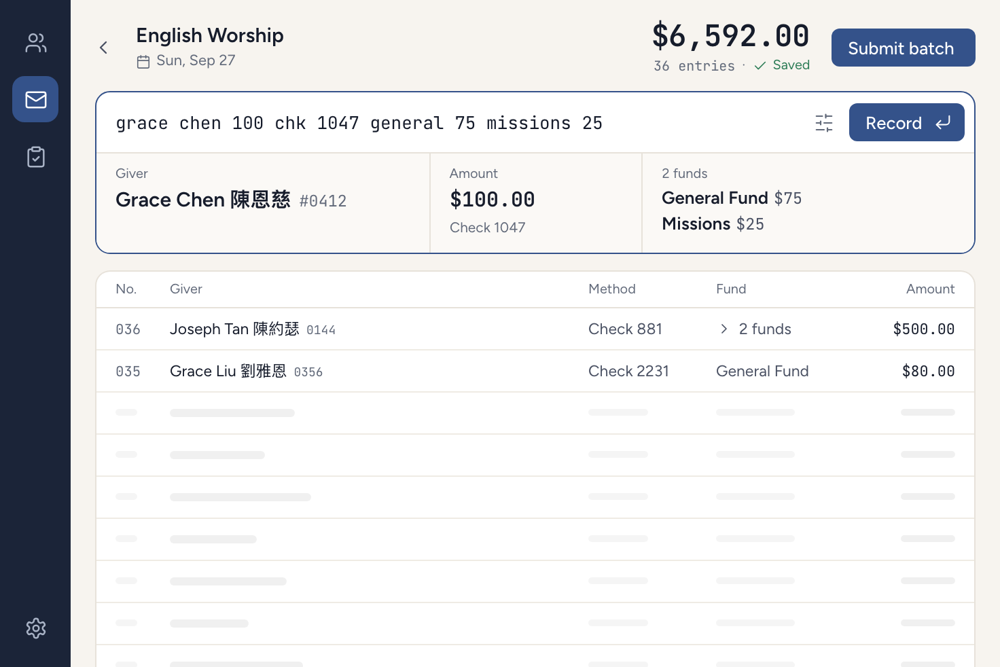

Church Offering Entry
I replaced a small church's $200-a-month offering software with one that runs free on their Google Workspace, then redesigned how the counting team enters each gift based on interviews with them.
Summary
Goal
Help the counting team get a whole service's offerings entered in one sitting, with fewer mistakes, at a price a small church can afford.
Problem
The old software cost $200 a month. Counters clicked through several dropdowns for every gift, and then the office manager typed it all again into QuickBooks.
Role
The church asked me to replace it. I did the research and design, and built the software on the church's Google Workspace.
Result
The new system costs nothing to run and sends offerings straight to QuickBooks, which saves the office manager about an hour a week. The new one-line entry is designed and prototyped, and we start testing it with the counters soon.
- Client
- A small bilingual church
- Role
- Designer and developer
- Scope
- Research, design, build
- Timeline
- About 2 weeks
- Status
- New entry in testing soon
- Year
- 2026

The problem
A small bilingual church was paying $200 a month for its offering software. Every gift took 7 clicks, more if it was split across funds, and a Sunday has 30 to 50 gifts. That's 210 to 350 clicks and about 45 minutes of entry. After that, the office manager typed every transaction again into QuickBooks, about an hour each week.

What I did
I talked to four counters, sketched eight different ways to enter a gift, then designed, built and hosted the replacement. What they complained about most was going back and forth between the mouse and the keyboard, so I went with a single typed line.


The solution
Each gift is one line of text, typed in any order. Before it saves, a readback shows who gave, how much and to which funds. Split gifts have to add up, and if a name matches more than one person, it asks instead of guessing. When the batch is done, it goes to QuickBooks in one step.


Outcome
$200 a month down to about $15, and roughly an hour of weekly re-entry gone. The new entry hasn't been used on a real Sunday yet, though. Testing with the counters starts soon.
The brief
After each service, a few volunteers sit down with the envelopes, checks and cash and record every gift. Those records become the bank deposit and each member's year-end giving statement, so a wrong name or fund doesn't stay on Sunday. It shows up later on someone's statement.
The church wanted entry to be faster and less error-prone, and a smaller bill than the $200 a month it was paying. It's a bilingual congregation, so English and Chinese names sit in the same member list, and a lot of givers split one check across several funds.
I interviewed four counters about what a typical Sunday looks like in the old software. Two complaints kept coming up.
- Too many clicks per gift. Each one takes 7 clicks, and a few more if it's split between funds. Open the dropdowns, move to the keyboard to type the amount, then back to the mouse for the next gift. Rinse and repeat 30 to 50 times. That's 210 to 350 clicks and about 45 minutes every Sunday.
- Everything gets typed twice. After the counters finish, the office manager re-enters the same transactions in QuickBooks, which takes about an hour every week.
The clicking itself wasn't the worst part. One counter put it this way.
Once you get used to it, it's not too bad. But I really didn't like moving back and forth between the mouse and the keyboard.
How can a counter enter a whole gift without reaching for the mouse, and still see exactly what's about to be saved?
Exploring the entry
I explored eight ways to enter a gift. Four are pictured below.
- Paste and parse. Paste a whole batch at once and only fix the lines it flags.
- Piles. Sort envelopes into piles by fund first, then enter just the name and amount.
- Verify. Scans pre-fill each gift, and the counter confirms or corrects it.
- Batch stream. A trimmed-down command bar, with the batch building up underneath.


The command bar went straight at the counters' biggest complaint, since you can type a whole gift without touching the mouse. What it was missing was a way to see the batch so far and check against it. The batch stream kept the command bar and added that running list, so that's the one I took forward.
One line per gift
A counter types a gift the way they'd say it out loud, in any order. As they type, the panel underneath reads it back as giver, amount and funds, so if it picked the wrong Grace, they see it before anything saves. Press Enter and it's recorded, and the line clears for the next one.
Anything left out falls back to a default. The method and fund carry over from the last gift, so a run of cash gifts to the General Fund only needs a name and an amount. Typing @missions switches the default fund for the rest of the batch.
A lot of checks cover more than one fund. The counter types the check amount plus whichever shares they know, and the rest goes to the default fund. If the shares add up to more than the check, the line won't record, and the readback says how far off it is.

Catching mistakes
Names are where most of the trouble is. Two members can have the same first name, a visitor might not be in the system yet, and some gifts come with no name at all. In each case, the readback asks instead of guessing.
- Two or more matches show up as buttons, each with the member's envelope number.
- No match lets the counter add the person as a new member right there, or record the gift as anonymous.
- Typing an envelope number skips the search altogether.


Names show in both English and Chinese.
Mistakes are quick to fix too. The Up arrow opens the last entry, and clicking any row opens that one. Edits happen right in the list, and Save stays off until the funds add up to the gift.

From batch to QuickBooks
Every entry saves as soon as it's recorded. Submitting is its own step. It shows totals by fund, the number of donors and any anonymous gifts, so the treasurer can check them against the cash and checks on the table.

An empty batch explains the one-line format and gives an example to try. The same screen works on a tablet or phone, with the readback stacked under the entry line.


After submitting, nobody has to copy the batch into QuickBooks by hand anymore. The system connects to the church's QuickBooks company, and each fund gets mapped to an income account once. From then on a batch goes over in one step, and it can't be sent twice.
That's about an hour a week the office manager gets back!

Outcome and what's next
- Monthly cost, old system
- $200
- Monthly cost, new system
- $0
- Re-entry into QuickBooks removed, per week
- ~1 hour
The church already has Google Workspace, which Google gives nonprofits for free, so I built the new system inside it. The app is a Google Apps Script web app, and member info, offering records and attendance all save to a Google Sheet the church owns. There's no server to pay for or keep running.
Counters sign in with their church Google accounts, and the Sheet isn't shared with them, so they can enter gifts without being able to open or download everyone's giving history.
I designed the entry to be fast and hard to get wrong. A gift is one typed line with no dropdowns, and every gift gets read back before it saves. I haven't measured any of that yet, though. The new entry hasn't been used on a real Sunday, so I don't have numbers on entry time or errors.
Reflection
- The interviews didn't point at any one field. What bothered the counters was jumping between the mouse and keyboard, and that's what pushed me toward a typed line.
- Typing works well for counters who are comfortable on a keyboard. Not every volunteer is, so I still think the keypad version is worth building as a second mode.
- Next up is testing with the same four counters. A Sunday takes about 45 minutes today, so I want to time one on the new entry, and track how often a submitted batch has to be reopened.